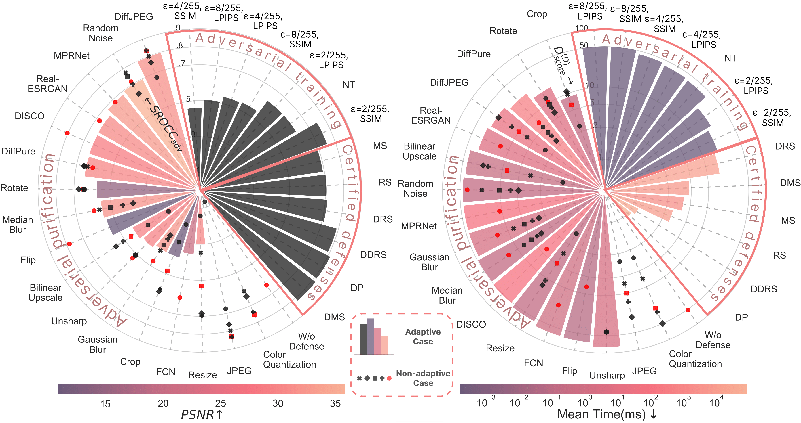
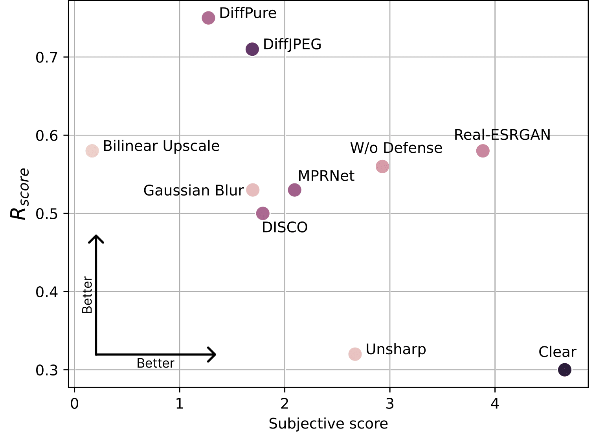
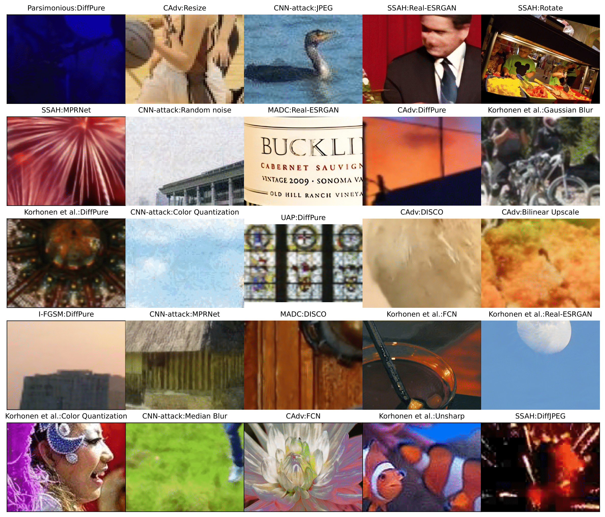

Modern neural-network-based Image Quality Assessment (IQA) metrics are vulnerable to adversarial attacks, which can be exploited to manipulate search engine rankings, benchmark results, and content quality assessments, raising concerns about the reliability of IQA metrics in critical applications. This paper presents the first comprehensive study of IQA defense mechanisms in response to adversarial attacks on these metrics to pave the way for safer use of IQA metrics. We systematically evaluated 30 defense strategies, including purification, training-based, and certified methods --- and applied 14 adversarial attacks in adaptive and non-adaptive settings to compare these defenses on 9 no-reference IQA metrics. Our proposed benchmark aims to guide the development of IQA defense methods and is open to submissions; the latest results and code are at https://videoprocessing.ai/benchmarks/iqa-defenses.html
Our benchmark is the first to evaluate and compare different techniques for defending IQA metrics. Key features are:



Latest results and steps to submit your method can be found here: https://videoprocessing.ai/benchmarks/iqa-defenses.html.
@misc{gushchin2024guardiansimagequalitybenchmarking,
title={Guardians of Image Quality: Benchmarking Defenses Against Adversarial Attacks on Image Quality Metrics},
author={Alexander Gushchin and Khaled Abud and Georgii Bychkov and Ekaterina Shumitskaya and Anna Chistyakova and Sergey Lavrushkin and Bader Rasheed and Kirill Malyshev and Dmitriy Vatolin and Anastasia Antsiferova},
year={2024},
eprint={2408.01541},
archivePrefix={arXiv},
primaryClass={cs.CV},
url={https://arxiv.org/abs/2408.01541},
}